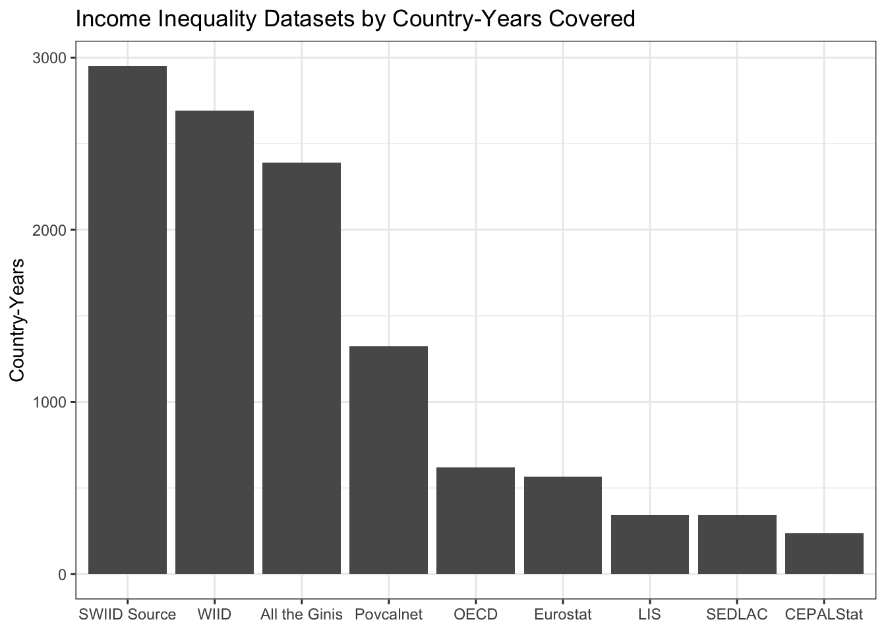
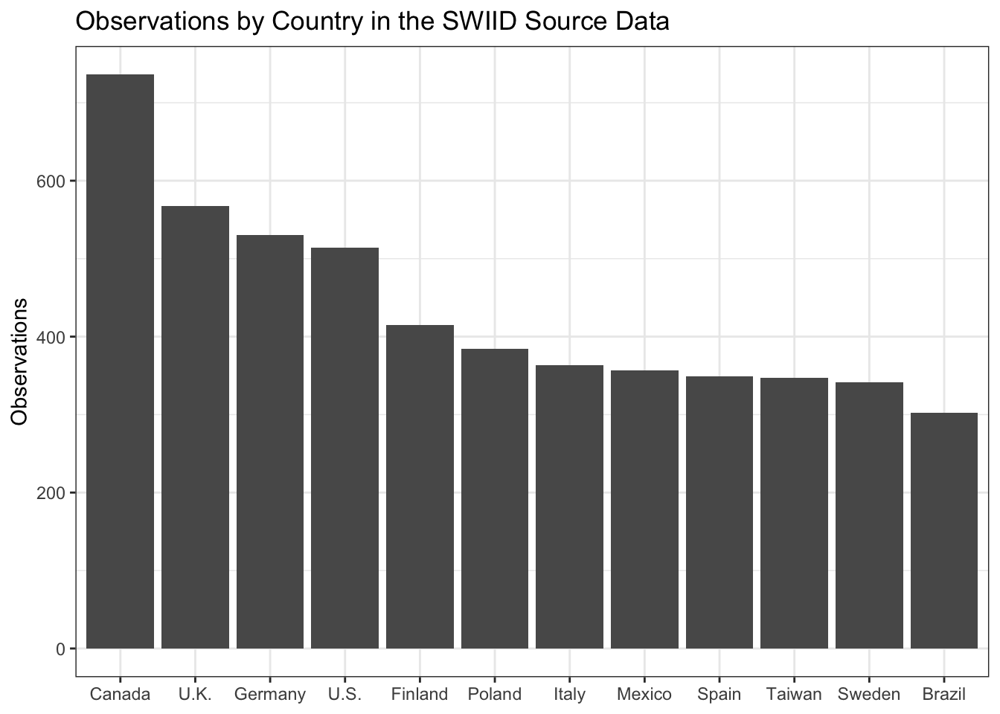
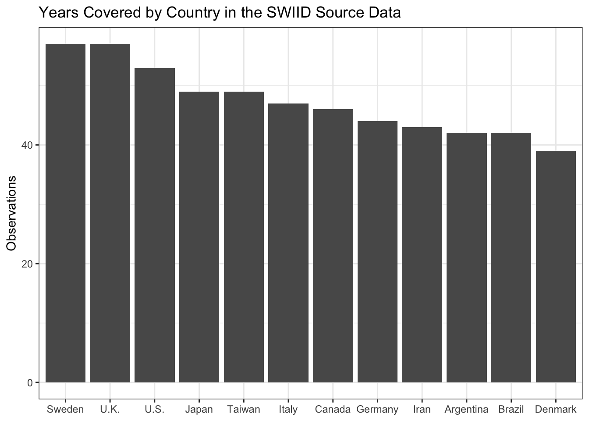
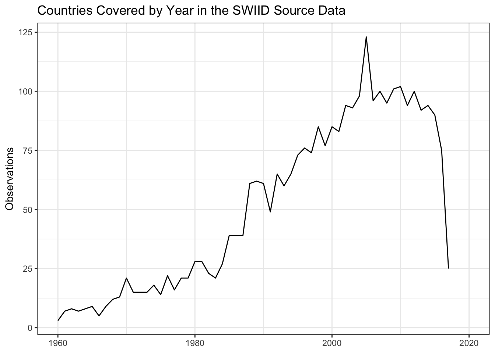
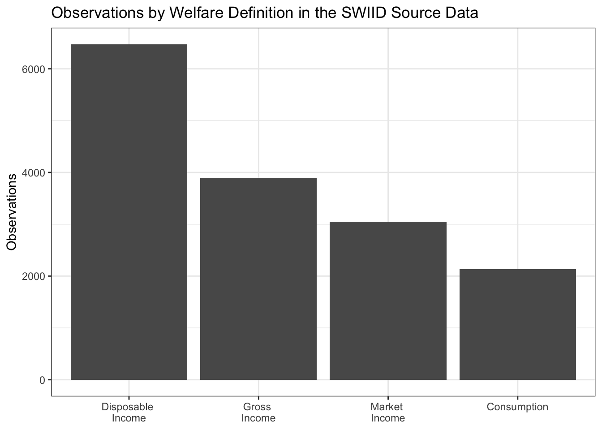
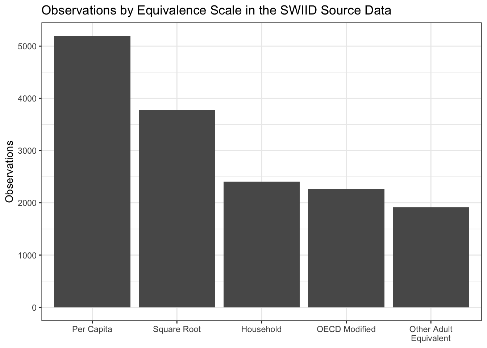
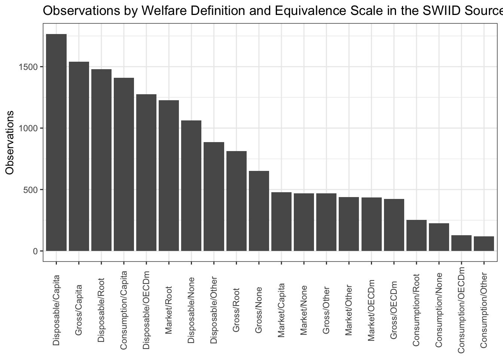

The SWIID Source Data
note
r
swiid
I have been producing the Standardized World Income Inequality Database for nearly a decade. Since 2008, the SWIID has provided estimates of the Gini index of income inequality…
Saturday, 9 February 2019: Updated with information on the source data for SWIID Version 8.0
I have been producing the Standardized World Income Inequality Database for nearly a decade. Since 2008, the SWIID has provided estimates of the Gini index of income inequality1 for as many countries and years as possible and—given the primary goal of maximizing spatial and temporal coverage—these estimates are as comparable as the available data allow. The dataset has been used widely by academics, journalists, and policymakers. It’s been successful way beyond all my hopes.2 I’ve been adding to it, revising it, improving on it pretty much the entire time since its launch. Now, with the support of the NSF, I am scrapping all of that work and starting fresh. From scratch.
This is the first in a series of posts on how I did it. It focuses on an unheralded but foundational part of the SWIID project, the source data. The basic idea behind the SWIID is to start with the data that has been most carefully picked over to ensure its utmost cross-national comparability: the data of the fantastic Luxembourg Income Study. I’ve heard that generating a single country-year of LIS data takes an average of ten person-months of work. That’s dedication to comparability. ❤️ But the flipside of maximizing comparability is that the LIS’s coverage is pretty sparse: at last count, it includes just 351 country-years.3 To address this weakness, the SWIID routine estimates the relationships between Gini indices based on the LIS and all of the other Ginis available for the same country-years, then uses these relationships to estimate what the LIS Gini would be in country-years not included in the LIS but available from other sources.4 The critical first step to making this work is getting a lot of other, non-LIS Ginis. I call these other Ginis the SWIID’s source data. Over the years, I and my research assistants built up a big spreadsheet of data collected from international organizations, national statistical offices, and scholarly books and articles. But it seemed like whenever I checked over these source data, I would find that at least a few figures had been recently revised, or their source was seemingly no longer available, or (worst of all) they evidently had been entered incorrectly. So again: it’s time to start over from scratch.
To be included in the SWIID’s source data, observations need to encompass the entire population of a country without regard to age, location,5 or employment status.6 They need to have an identifiable welfare definition and equivalence scale (more on these below). Finally, because I want to be able to direct users to sources they can easily peruse themselves, observations need to be available online.7
Hand-entering data is tedious and error-prone work, so I automated as much of the process of data collection as practicable. Most international organizations and a few national statistical offices use APIs that facilitate downloading their data, and often the #rstats community has built R packages using these APIs to make the task even easier. I took as much advantage of these resources as possible.8 In the absence of an API, I scripted downloads of any available spreadsheets, preferring clean csv files to excel-formatted ones. If there was no spreadsheet, but data were available in pdf files, I automated downloading these files and then used Thomas Leeper’s tabulizer package to read the tables into R. In the absence of a file to download, I scripted the process of scraping the data from the web. Still, for a variety of reasons, a source’s data may have been consigned to being entered in a separate spreadsheet. Many sources contain just a handful or fewer observations, making the payoff to the often laborious process of data cleaning too small to justify the effort. Some sources–including most academic articles–are behind paywalls, making reproducibility a hassle anyway (though I still often used tabulizer to read the data from the pdf before cutting-and-pasting it into the spreadsheet). Finally, at least one source contains crucial information encoded in the typeface(!!) of its tables, information lost when the tables are scanned into R. All of the entries in this spreadsheet were checked repeatedly for errors,9 and I excluded repeated reports of the exact same observation from different sources. In the end, I was able to automate the collection of more than three quarters of the source data and a much higher percentage of the series that will be updated or are subject to revision, facilitating incorporating these changes in future versions.
The resulting dataset comprises 15549(!) Gini coefficients from 2951 country-years in 196 countries or territories, making the coverage of the SWIID source data broader than that of any other income inequality dataset. This isn’t surprising given that, with the exceptions of the WIID (which, since it provides no original data, isn’t drawn on at all anymore) and the All the Ginis database (which provides little original data, and so isn’t drawn on much), the SWIID source data incorporates all of the data in these other datasets.
So, let’s check out what the source data look like. There is much more data available about the income distribution in some countries than in others. Which countries are most data-rich? The plot below shows the top dozen countries by the count of observations. Canada, by virtue of the excellent Statistics Canada as well as longstanding membership in the OECD and LIS, has 736 observations, many more than any other country. The United Kingdom, Germany, and the United States are next, followed by an interesting mix of countries from around the world with not surprisingly a sizable European representation. All are members of the LIS. On the other hand, eleven countries have only a single observation.

As we’ll see in later posts in this series, observations for the same country in the same year, but with different welfare definitions and equivalence scales or from different sources, are important to generating the SWIID’s cross-nationally comparable estimates. Still, we might be interested to know which countries have the most coverage of the years in the SWIID’s current 57-year timeframe, from 1960 to 2017, because the SWIID’s inequality estimates for countries with fewer country-year observations will include more interpolated values, which in turn will have more uncertainty.

The source data includes observations for Sweden and the United Kingdom in all but one of these years and for the United States in all but five. Iran and Argentina—two countries not included in the LIS—make the top 12, with 43 and 42 country-year observations respectively. The median country has observations in 16 different country-years.
We can also get a sense of the available inequality data by turning the question around and asking about coverage across countries over time. There are observations for 123 countries in 2005. Coverage is relatively good in the years from 2000 to 2015, at least 80 countries per year, before dropping to 75 countries for 2016 and just 25 for 2017. Country coverage is pretty thin each year through the 1960s and 1970s and still isn’t all that great until the late 1980s.10

Earlier I mentioned that to be included in the SWIID source data observations need to have an identifiable welfare definition and equivalence scale. A welfare definition is an answer to the question, this Gini measures the distribution of what? The four welfare definitions employed in the SWIID source data are market income, gross income, disposable income, and consumption. Market income is defined as the amount of money coming into the household, excluding any government cash or near-cash benefits, the so-called ‘pre-tax, pre-transfer income.’11 Gross income is the sum of market income and government transfer payments; it is ‘pre-tax, post-transfer income.’ Disposable income, in turn, is gross income minus direct taxes: ‘post-tax, post-transfer income.’12 Consumption does not refer to the money coming into the household at all but rather to the money going out.13 In the source data, Ginis of disposable income are much more common than those using other welfare definitions.

Equivalence scales are the ways in which the size and composition of a household is incorporated into the calculation of its members’ welfare. On the one hand, these factors can simply be ignored, with all households with the same amount of income or consumption treated as if they enjoy the same level of welfare, regardless of their size. One can improve on this household ‘scale’14 by dividing the household’s income by its number of members, that is, by using a per capita scale. But a household of two members and an income of $100,000 is better off than one with a single member and $50,000 due to economies of scale—that’s a big reason why people look for roommates. There are a variety of ways to try to account for these economies by calculating the number of “equivalent adults” in the household. Of the most commonly used adult-equivalent scales, the square-root scale is the most straightforward: one simply divides the household income by the square root of the number of members. The “OECD-modified” scale for the number of adult equivalents (which the OECD itself actually never used) counts the first adult as 1, all other adults as .5, and each child as .3. And there are plenty of other adult-equivalent scales, from the “old OECD” scale (1 for the first adult, 0.7 for each additional adult, and 0.5 for each child) to caloric-requirement-based scales (which are actually very nearly per capita, as it turns out) to a number of country-specific scales. In previous versions of the SWIID, all adult-equivalent scales were considered a single category. Now, the square-root scale and the OECD-modified scale have both been split out, leaving the remaining catch-all adult-equivalent category much smaller.

Differences in the welfare definition and the equivalence scale employed constitute the biggest source of incomparability across observations in the source data, and all twenty of the possible combinations are represented. I’ll take up how we get from these incomparable observations to the SWIID estimates in the next post. In the meantime, if you’d like to see the source data, you can download it from here.

References
References
Jesuit, David K., and Vincent A. Mahler. 2010. “Comparing Government Redistribution Across Countries: The Problem of Second-Order Effects.” Social Science Quarterly 91(5): 1390–1404.
Morgan, Jana, and Nathan J. Kelly. 2013. “Market Inequality and Redistribution in Latin America and the Caribbean.” Journal of Politics 75(3): 672–85.
Solt, Frederick. 2016. “The Standardized World Income Inequality Database.” Social Science Quarterly 97(5): 1267–81.
Footnotes
I think the clearest explanation of the Gini index is that it is half the average difference in income between all pairs of units—say, households—as a percentage of the mean income of those units. Okay, I said “clearest,” not necessarily “clear.” Anyway, it has a theoretical range of 0 (all households have the same income) to 100 (one household has all the income and the rest have none), but Ginis below 20 or above 60 are rare in the real world. There are good reasons to prefer other measures of inequality, and there are many options, but the Gini is by far the most widely available.↩︎
At the time, those hopes were admittedly concerned mostly with getting #Reviewer2 off my back so I could publish a series of manuscripts I had on how the context of inequality is related to people’s political attitudes.↩︎
Which is what #Reviewer2 always complained about. R2: Shouldn’t you include Ruritania and Megalomania in your sample, given the broad applicability of your theory? Me: Yes, sure, but like I wrote in the paper, there’s no LIS data for those countries, and the other available data just isn’t comparable. R2: Well then, I recommend rejection. Me: Grr.↩︎
If you’re thinking, “hey, multiple imputation for missing data,” cool, that’s what I was thinking too. If you’re thinking of poll aggregators and house effects, yep, it’s very similar. If you’re thinking of inequality as a latent variable, with a number of indicators of varying discrimination, that also works. If you’re thinking you need to look at some cat gifs right about meow, click here.↩︎
The requirement for complete territorial coverage was relaxed for minor deviations such as data on Portugal that excludes Madeira and the Azores. It was relaxed somewhat further for early series that covered only the urban population of three highly urbanized countries: Uruguay, Argentina, and South Korea. The general rule, however, is that data is excluded if it measures the income distribution of only urban or rural populations, or of only selected cities, or some other such incomplete territory.↩︎
This last requirement is new; it means nearly 600 observations on the distribution of wages across employed individuals that were included in the source data of previous versions of the SWIID are now excluded. Between the lack of information on those out of the workforce and on how workers formed households, these data weren’t very strongly related to the LIS anyway.↩︎
For scholarly articles, I preferred DOIs or JSTOR stable URLs, but if those were unavailable I used the publisher website or another repository. For books, I provide the link to the relevant page in Google Books. There were two books that I decided I had to include for which Google Books wouldn’t show the relevant pages (at least not to me); in those two cases, the links I provide just go to the entire volume. I confirmed that the cited pages can be found using Amazon’s “Look Inside” feature, so I consider my “must be available online” rule only badly bent rather than completely broken.↩︎
Although the sources with APIs were relatively few, they contained the most data: nearly half of the observations were collected this way.↩︎
Which, of course, is not to say that they are error-free. If you spot any problems, or better still, know of sources I might have missed, please let me know!↩︎
This is partly a result of my decision to insist on sources that are available online, but it’s just as well: so little information is available about many of the so-excluded observations on that era that I find it hard to have much confidence in them.↩︎
It’s important, though, to not think of the distribution of market income as ‘pre-government.’ Beyond taxes and transfers, governments seeking to shape the distribution of income have a wide array of ‘market-conditioning’ or ‘predistribution’ policy options, with minimum wage regulation and labor policy two obvious examples (see, e.g., Morgan and Kelly 2013). Further, even taxes and transfers can profoundly shape the distribution of market income through ‘second-order effects.’ Where robust public pension programs exist, for example, people save less for retirement, leaving many of the elderly without market income in old age and so raising the level of market-income inequality (see, e.g., Jesuit and Mahler 2010).↩︎
Note that disposable income still does not take into account, on the one hand, indirect taxes like sales taxes and VAT, or, on the other, public services and indirect government transfers such as price subsidies. There is very little information available about the distribution of such ‘final income,’ pretty much only that generated by the Commitment to Equity Institute, so I exclude it from the SWIID source data at least for the time being.↩︎
In previous versions of the SWIID, market and gross income were treated as a single welfare definition, and I am glad to finally be able to split them apart (c.f., Solt 2016, 1272). The consumption welfare definition might now be the most heterogeneous within the SWIID source data, varying considerably in whether and how observations treat expenditures on durable goods. Another source of differences within a single welfare definition is the extent to which nonmonetary income—such as the value of food grown for the household’s own consumption or of housing that the owner occupies—is included. The SWIID source data include the variable
monetarythat indicates whether any nonmonetary income is taken into account, but at present this information is not incorporated into the classification of welfare definitions.↩︎Scare quotes because, strictly speaking, nothing is being scaled at all; it’s simply treating the household as the unit of analysis.↩︎